Radiography: Radiation Physics
RadiographyRadiation is energy that moves from one place to another in a form that can be described as waves or particles. We are exposed to radiation in our everyday life.
What is radiationTypesRadioactive decayHalf-lifeActivityAtomic structureSubatomic particlesZ, A and NAtomic modelsShells and energyIsotopesX-ray productionFormulas
What is radiation?
Familiar sources include the sun, microwave ovens and car radios. Most of this radiation carries no risk to health, but some does. In general, radiation has lower risk at lower doses and higher risk at higher doses. Depending on the type, different measures protect our bodies and the environment while we benefit from its many applications.
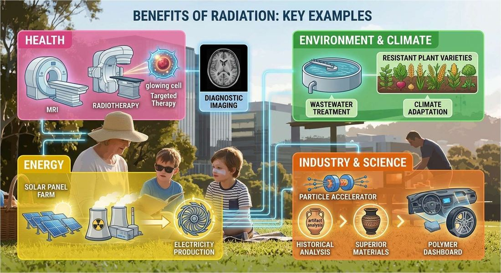
- Health: many cancer treatments and diagnostic imaging.
- Energy: electricity from solar and nuclear energy.
- Environment and climate: wastewater treatment and climate-resistant plant varieties.
- Industry and science: examining historical objects and making superior materials.
Types of radiation
Non-ionizing radiation
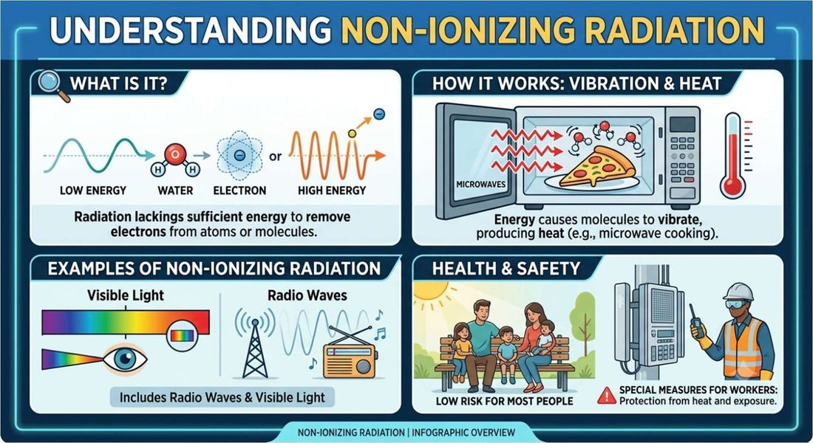
Lower energy radiation that cannot detach electrons from atoms or molecules. Its energy can make molecules vibrate and produce heat, which is how microwave ovens work. For most people it is not a health risk, though workers in regular contact with some sources may need protection from heat. Radio waves and visible light are examples.
Ionizing radiation
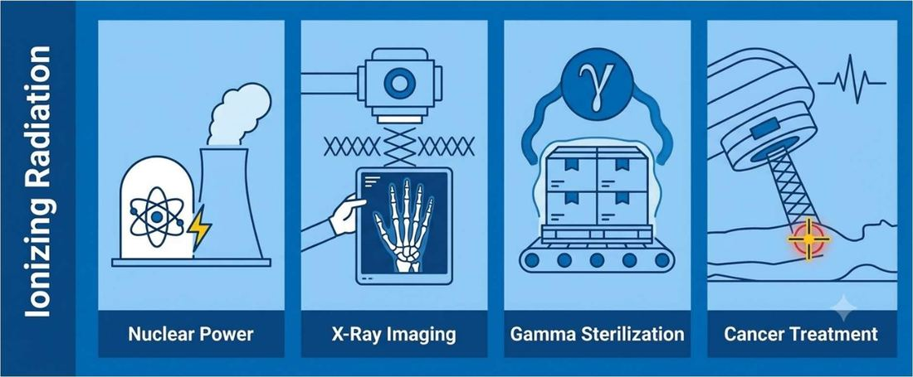
Radiation with enough energy to detach electrons from atoms or molecules, producing ions (charged atoms or molecules). In high doses it can damage cells or organs or even cause death. With correct use, doses and protection it has many beneficial uses in energy, industry, research and in diagnosing and treating diseases such as cancer.
Radioactive atoms and radioactive decay
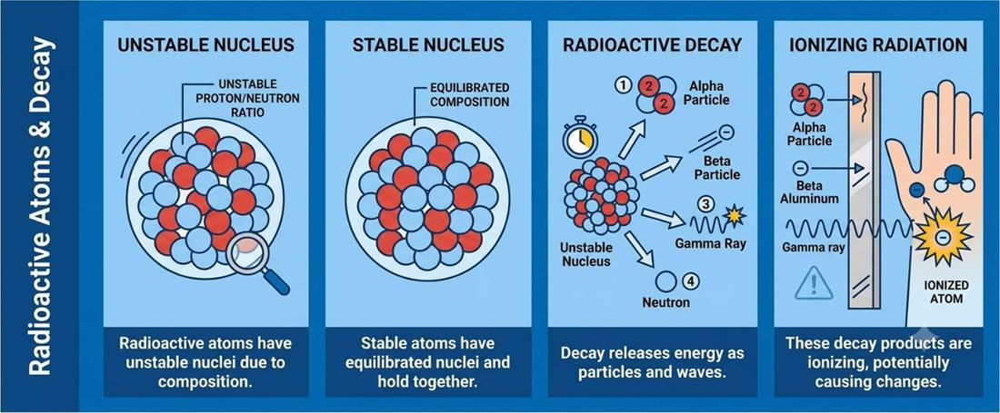
Most atoms are stable thanks to a balanced mix of protons and neutrons in the nucleus. In unstable atoms the mix cannot hold together. These are radioactive atoms, and when they decay they release ionizing radiation: alpha particles, beta particles, gamma rays or neutrons.
Alpha radiation
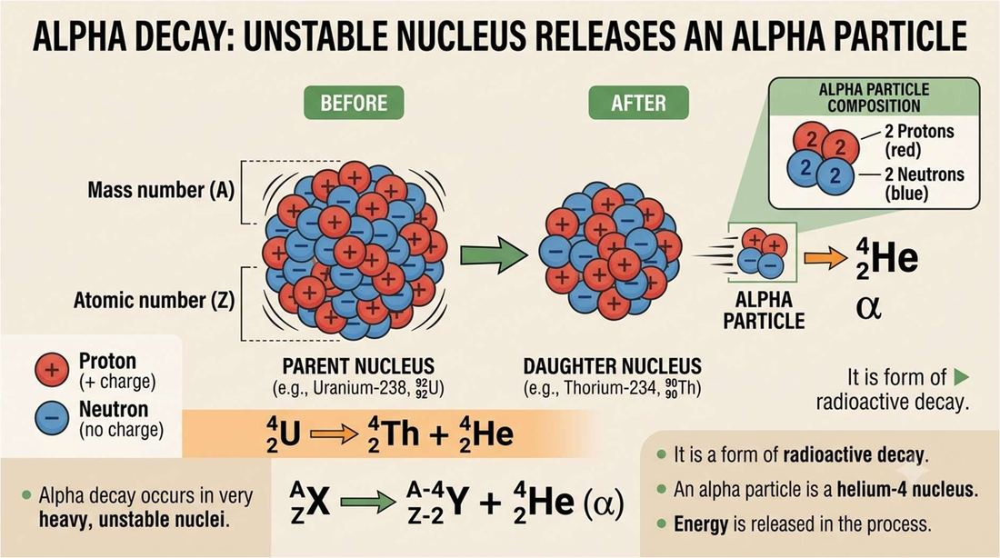
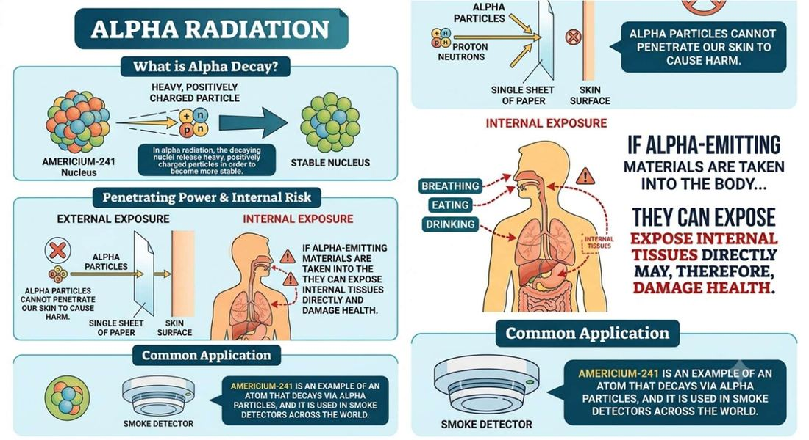
Heavy, positively charged particles (a helium-4 nucleus). They cannot penetrate skin and are stopped by a sheet of paper. If alpha emitters are breathed in, eaten or drunk, they can expose internal tissue directly. Americium-241 is an alpha emitter used in smoke detectors.
Beta radiation
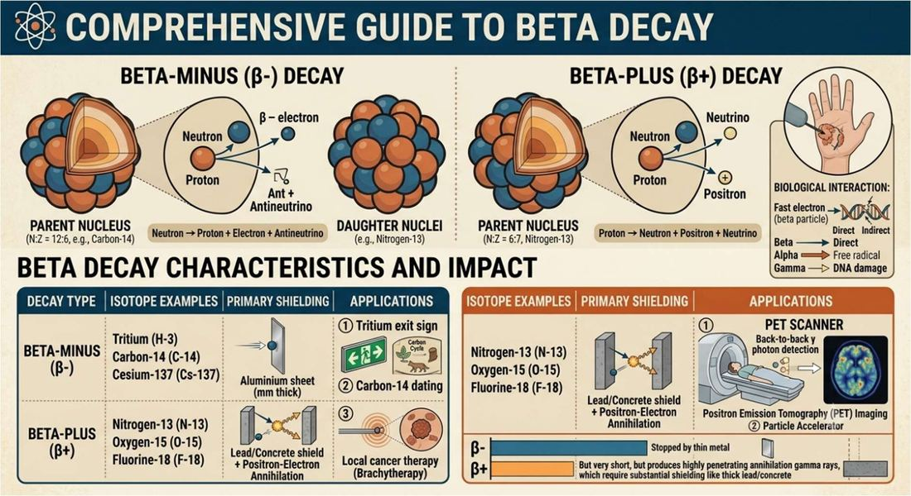
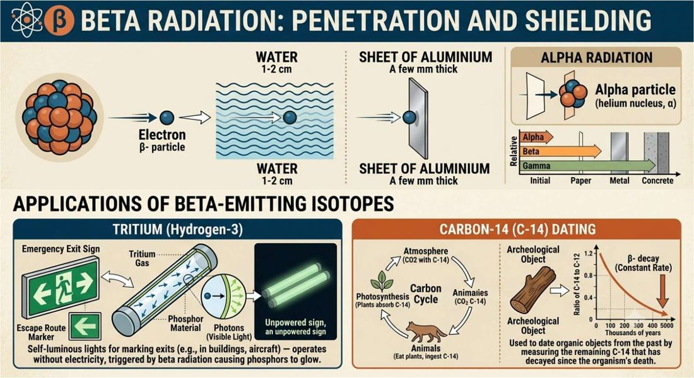
Beta particles are electrons, more penetrating than alpha: they pass through 1-2 cm of water and are stopped by a few millimetres of aluminium. Tritium (hydrogen-3) powers self-glowing emergency exit lights, and carbon-14 is used to date ancient objects.
Gamma rays
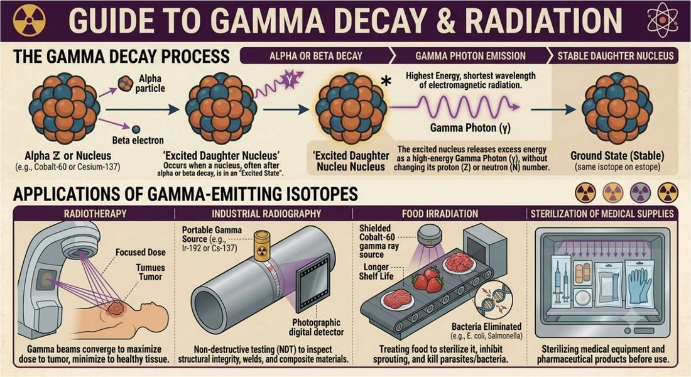
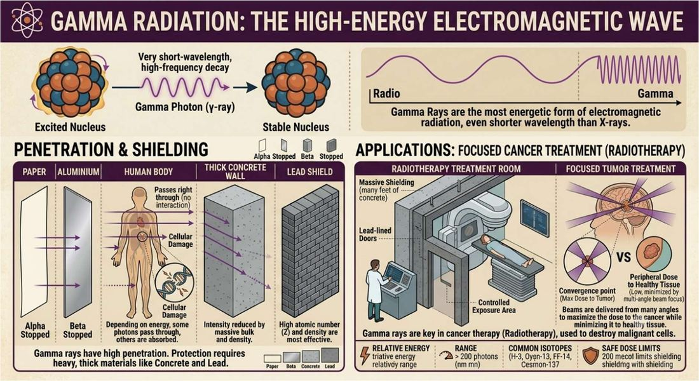
Electromagnetic radiation similar to X-rays. Some pass through the body, others are absorbed and may cause damage. Thick concrete or lead reduces their intensity, which is why radiotherapy rooms have thick walls.
Neutrons
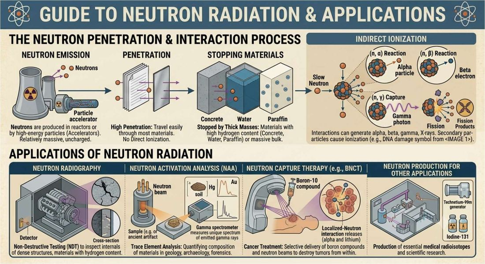
Uncharged particles that do not ionize directly, but their interactions produce alpha, beta, gamma or X-rays that do. They are stopped only by thick concrete, water or paraffin, and are produced in reactors and accelerators.
Electron capture
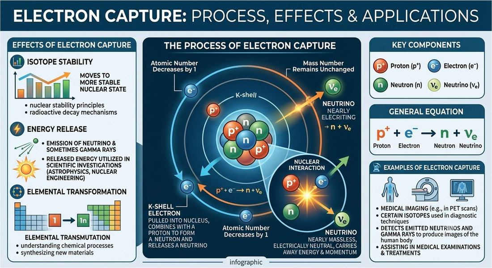
A K-shell electron is pulled into the nucleus, combines with a proton to form a neutron, and a neutrino is released. The atomic number decreases by 1 while the mass number is unchanged. It helps isotopes reach a more stable state and is used in some diagnostic imaging isotopes.
Half-life in radioactive decay
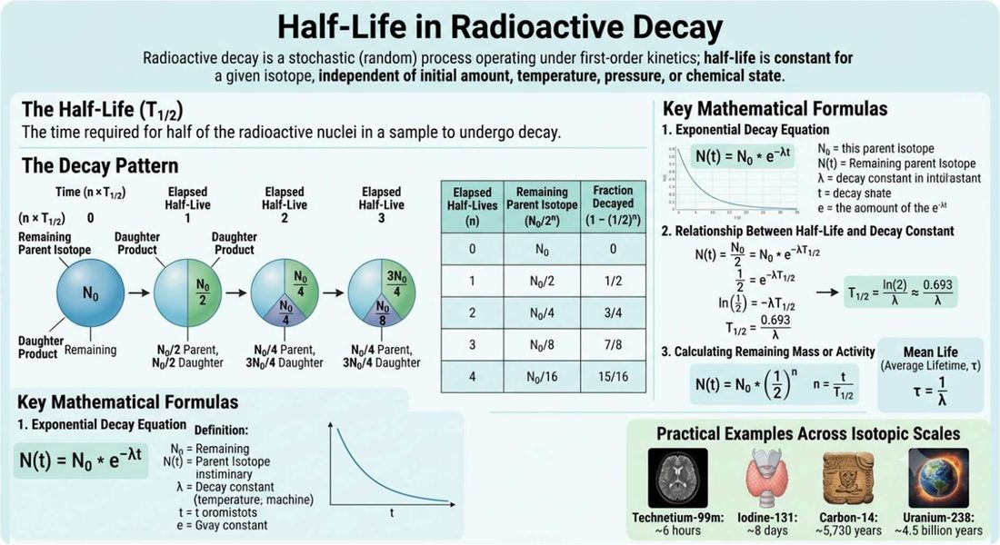
- Random: the exact moment one nucleus decays cannot be predicted, but for many nuclei the decay rate is predictable.
- Spontaneous and independent: temperature, pressure, chemical bonding and magnetic fields do not change the decay rate.
- First-order: the decay rate is proportional to the number of undecayed nuclei.
The half-life is the time for half the radioactive nuclei to decay. Mean life (τ) is the average lifetime of a single nucleus. After n half-lives, N = N0(1/2)n.
| Half-lives (n) | 0 | 1 | 2 | 3 | 4 | 5 |
|---|---|---|---|---|---|---|
| Remaining | 100% | 50% | 25% | 12.5% | 6.25% | 3.125% |
| Decayed | 0% | 50% | 75% | 87.5% | 93.75% | 96.875% |
| Isotope | Half-life | Radiation | Application |
|---|---|---|---|
| Technetium-99m | 6.01 hours | Gamma (140 keV) | Diagnostic SPECT (bone, renal, cardiac) |
| Iodine-131 | 8.02 days | Beta and gamma | Thyroid cancer and hyperthyroidism therapy |
| Carbon-14 | 5,730 years | Beta | Radiocarbon dating |
| Uranium-238 | 4.47 × 109 years | Alpha series | Geological dating |
Example 2: Iodine-131 decay constant: λ = 0.693 / 8.02 ≈ 0.0864 day−1.
Activity and specific activity
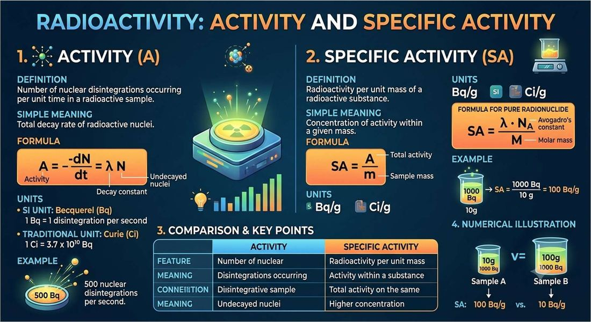
Activity (A) is the number of disintegrations per second: A = λN. The SI unit is the becquerel (1 Bq = 1 decay/s). The traditional unit is the curie (1 Ci = 3.7 × 1010 Bq).
Specific activity (SA) is activity per unit mass: SA = A/m, in Bq/g or Ci/g. For a pure radionuclide, SA = λNA/M.
Activity falls continuously with decay. Shorter half-lives give higher specific activity, which is preferred in radiopharmaceuticals so targeted radiation is delivered with minimal chemical mass.
Structure of the atom
Matter is anything with mass that occupies space (solid, liquid, gas, plasma). Diagnostic imaging depends on how radiation interacts with matter: an X-ray beam may be transmitted, scattered or absorbed.
An element is a pure substance whose atoms all have the same number of protons (atomic number Z). Hydrogen 1, Carbon 6, Oxygen 8, Aluminium 13, Tungsten 74. Changing neutrons gives a different isotope; changing electrons gives an ion.
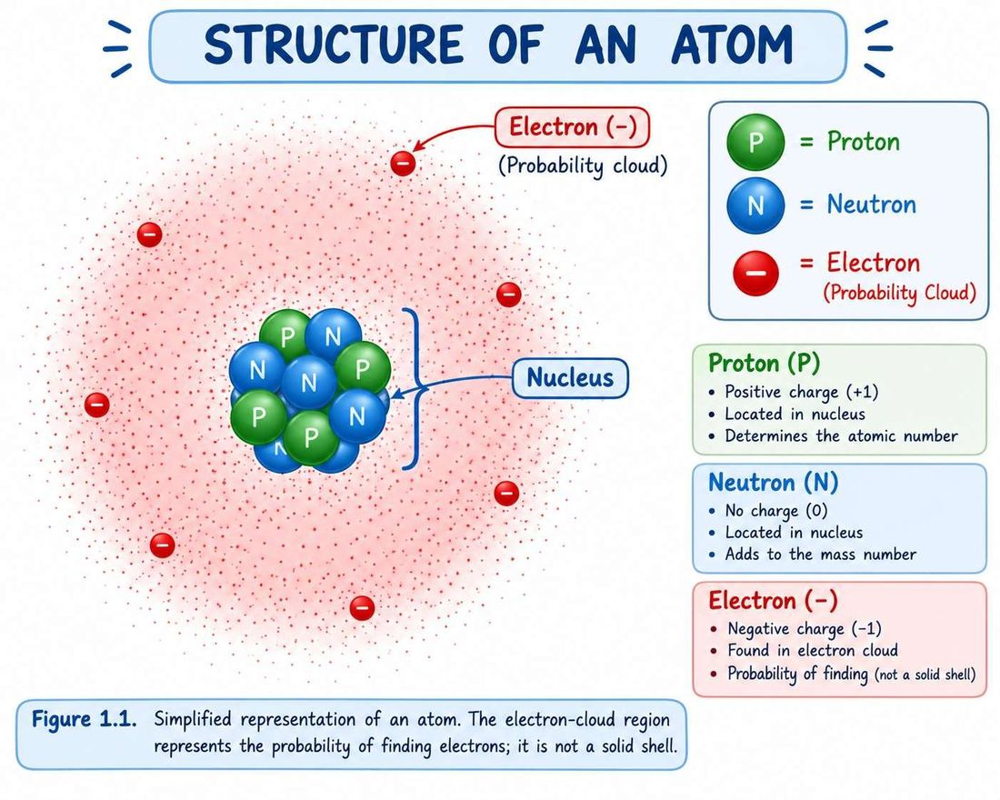
An atom is the smallest unit of an element that keeps its chemical identity: a tiny nucleus (protons and neutrons) surrounded by an electron cloud. The atomic radius is about 10−10 m and the nucleus about 10−15 to 10−14 m, so most of the atom's volume is not occupied by the nucleus. The nucleus holds almost all the mass.
| Feature | Atom | Molecule |
|---|---|---|
| Meaning | Unit of a chemical element | Two or more chemically bonded atoms |
| Example | One oxygen atom, O | O2, H2O, CO2 |
| Identity | Determined by proton number | Determined by types and arrangement of atoms |
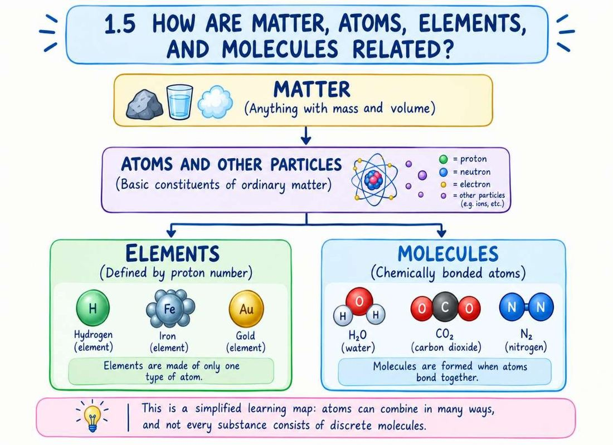
Why radiology students study atomic structure
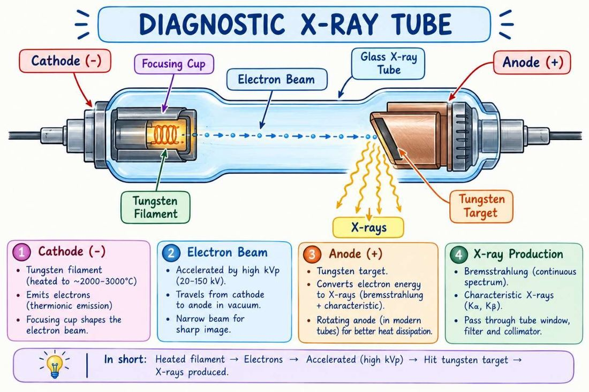
- X-ray production: fast electrons hitting target atoms produce bremsstrahlung and characteristic X-rays.
- X-ray interactions with the body: absorption and scatter create image contrast and affect patient dose.
- Nuclear medicine: isotopes like technetium-99m are used because of their nuclear properties.
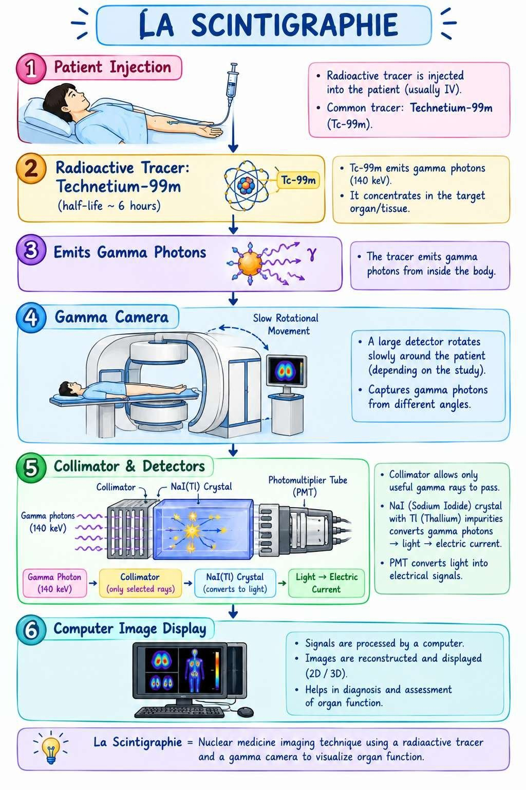
Subatomic particles
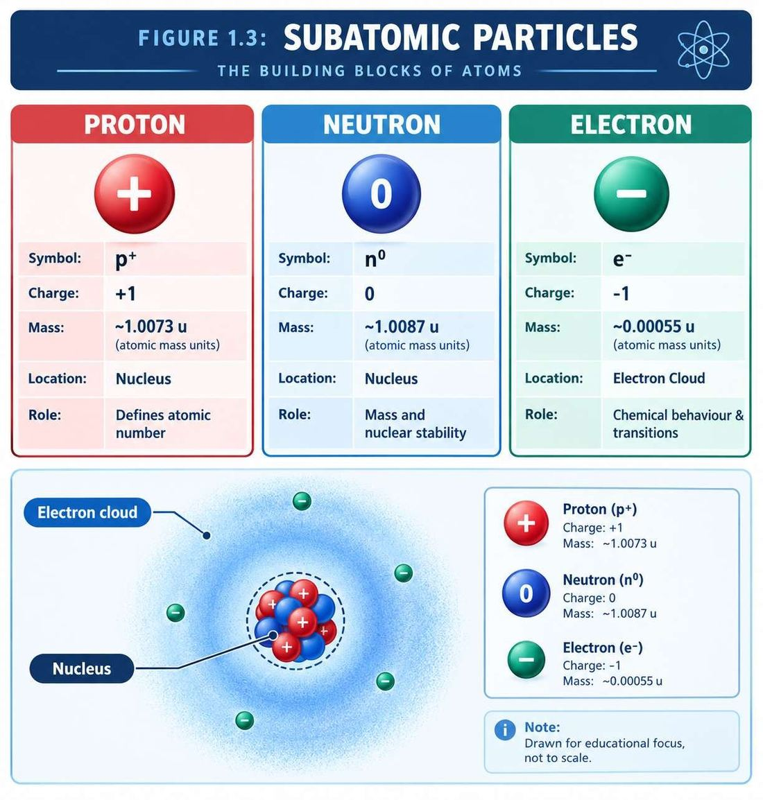
| Property | Proton | Neutron | Electron |
|---|---|---|---|
| Symbol | p+ | n0 | e− |
| Relative charge | +1 | 0 | −1 |
| Charge (C) | +1.602 × 10−19 | 0 | −1.602 × 10−19 |
| Mass (kg) | 1.673 × 10−27 | 1.675 × 10−27 | 9.109 × 10−31 |
| Mass (u) | 1.0073 | 1.0087 | 0.00055 |
| Location | Nucleus | Nucleus | Electron cloud |
| Role | Defines element | Mass and nuclear stability | Chemistry and atomic transitions |
A proton is about 1836 times heavier than an electron. The nucleus is held together by the strong nuclear interaction, which overcomes the electrostatic repulsion between protons. An atom is neutral when protons equal electrons; losing electrons makes a positive ion (cation), gaining electrons makes a negative ion (anion).
Discoveries: J. J. Thomson measured the electron's charge-to-mass ratio in 1897; Millikan's oil-drop experiment measured the elementary charge; James Chadwick discovered the neutron in 1932.
Atomic number, mass number and neutrons
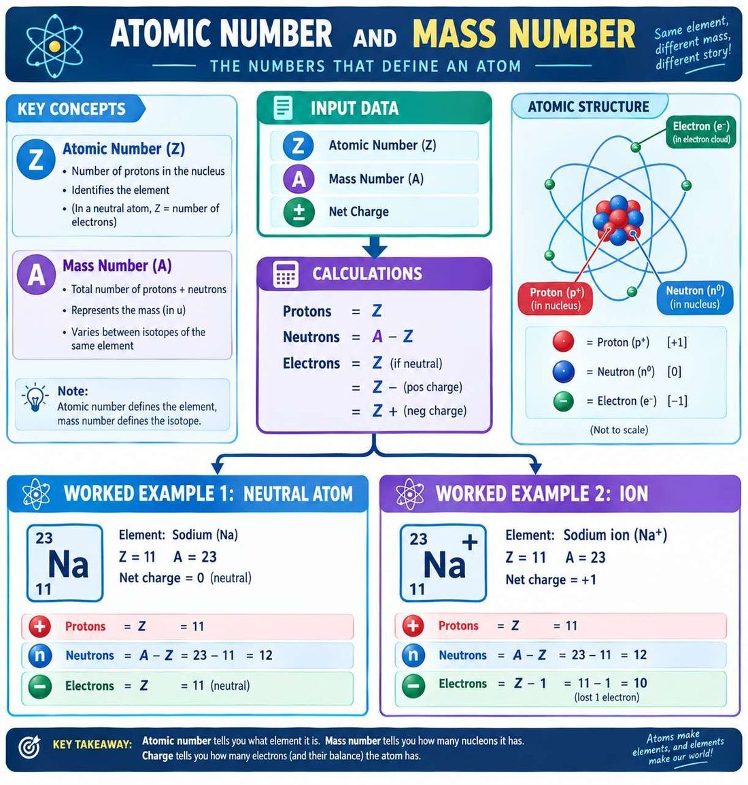
| Species | Protons | Neutrons | Electrons |
|---|---|---|---|
| Carbon-12 | 6 | 6 | 6 |
| Sodium-23 | 11 | 12 | 11 |
| Na+ (Z=11, A=23) | 11 | 12 | 10 |
| Bromine-80 | 35 | 45 | 35 |
| S2− (Z=16, A=32) | 16 | 16 | 18 |
Atomic models
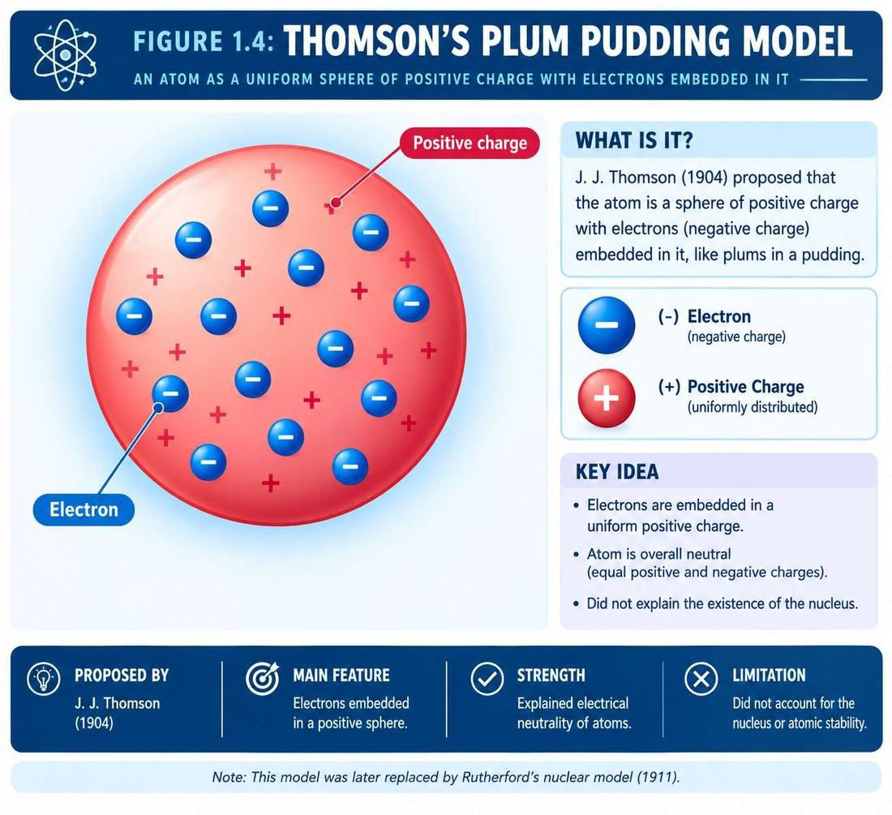
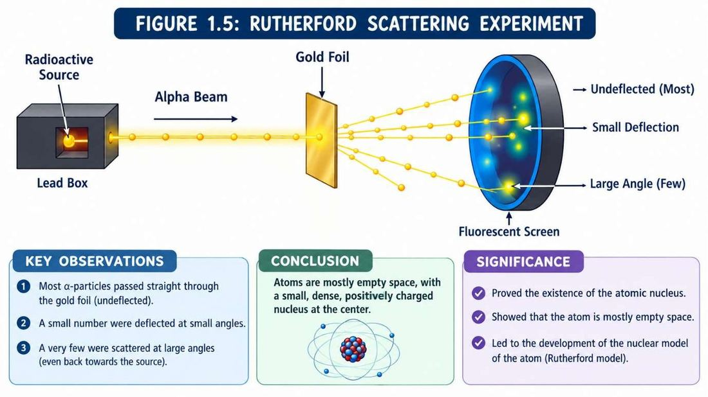
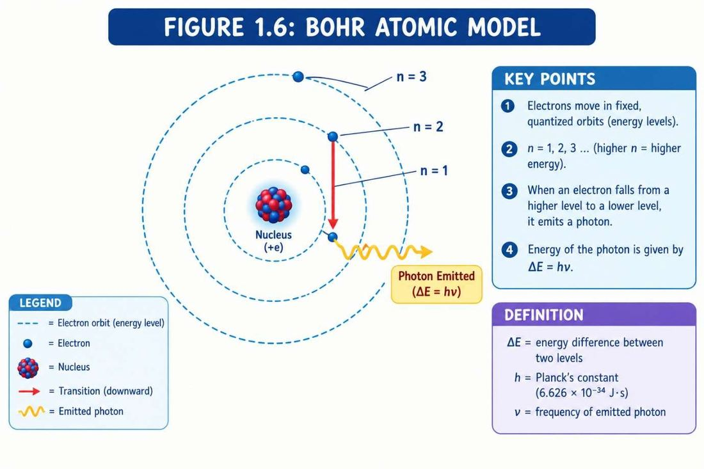
| Model | Main contribution | Major limitation |
|---|---|---|
| Dalton (1808) | Atomic theory of matter | Atoms treated as indivisible; no subatomic particles or isotopes |
| Thomson (1904) | Electrons embedded in a positive sphere | Could not explain Rutherford scattering |
| Rutherford (1911) | Compact, positive nucleus | Could not explain stability or discrete spectra |
| Bohr | Quantized energy levels | Fails for multi-electron atoms; replaced by quantum mechanics |
In Rutherford's gold-foil experiment most alpha particles passed straight through, some deflected slightly, and a tiny fraction bounced back. This showed that an atom is mostly empty space with its positive charge and mass concentrated in a tiny nucleus. Bohr's model explained the spectral lines of hydrogen using Ephoton = Ehigher − Elower.
Electron shells, binding energy and ionization
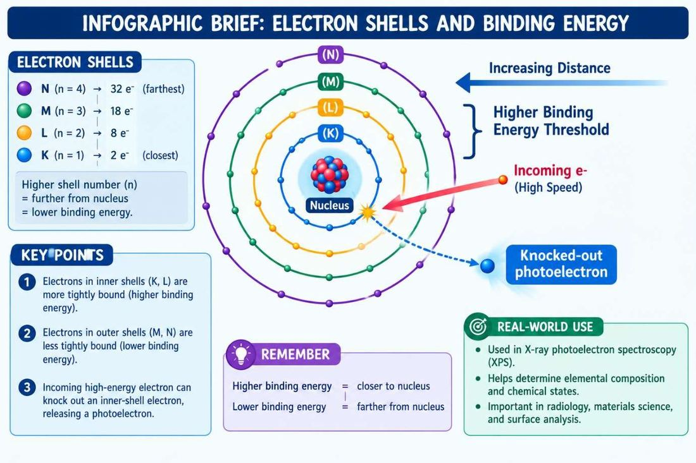
Shells are named K, L, M, N (n = 1, 2, 3, 4) and hold at most 2n2 electrons: 2, 8, 18, 32. Subshells s, p, d, f hold 2, 6, 10, 14 electrons. Examples: H 1s1, He 1s2, C 1s22s22p2, O 1s22s22p4.
Binding energy is the energy needed to remove an electron completely. Inner-shell electrons are closest to the nucleus, so they have the highest binding energy.
| Feature | Excitation | Ionization |
|---|---|---|
| What happens | Electron moves to a higher bound state | Electron is completely removed |
| Energy needed | Must match the energy difference | Must equal or exceed binding energy |
| Result | Atom stays neutral | Positive ion and free electron |
Isotopes, isobars and isotones
| Term | Meaning | Example |
|---|---|---|
| Isotopes | Same Z, different A | Carbon-12 and Carbon-14 |
| Isobars | Same A, different Z | Carbon-14 and Nitrogen-14 |
| Isotones | Same N, different Z | Carbon-14 and Nitrogen-15 (N = 8) |
Carbon-12 (6 neutrons) and carbon-13 (7) are stable; carbon-14 (8) is radioactive. Stable isotopes do not decay, while radionuclides are unstable and emit radiation. In nuclear medicine, Tc-99m (the "m" means metastable) is used for diagnostic imaging and F-18, a positron emitter, is used for PET scans.
Characteristic X-rays and bremsstrahlung
A characteristic X-ray is produced when an electron fills an inner-shell vacancy:
- A high-speed electron strikes a target atom.
- An inner-shell electron (for example K) is ejected.
- An outer-shell electron fills the vacancy.
- The energy difference is emitted as an X-ray photon: E ≈ Binner − Bouter.
Kα is the L to K transition and Kβ is the M to K transition. Example: 20 keV inner and 3 keV outer binding gives a 17 keV photon.
| Feature | Characteristic radiation | Bremsstrahlung |
|---|---|---|
| Mechanism | Shell transition filling an inner vacancy | Deceleration of an electron near the nucleus |
| Spectrum | Discrete lines | Continuous |
| Depends on | Shell binding energy | Nuclear charge Z |
Formula sheet
| Formula | Meaning |
|---|---|
| Z = protons | Atomic number |
| A = Z + N | Mass number |
| N = A − Z | Neutron number |
| E = hν | Photon energy (h = 6.626 × 10−34 J·s) |
| c = νλ | Speed of light (wavelength and frequency) |
| C = 2n2 | Maximum electrons in a shell |
| Ephoton = Ei − Ef | Transition energy |
| A = λN, N = N0(1/2)n | Activity and decay |